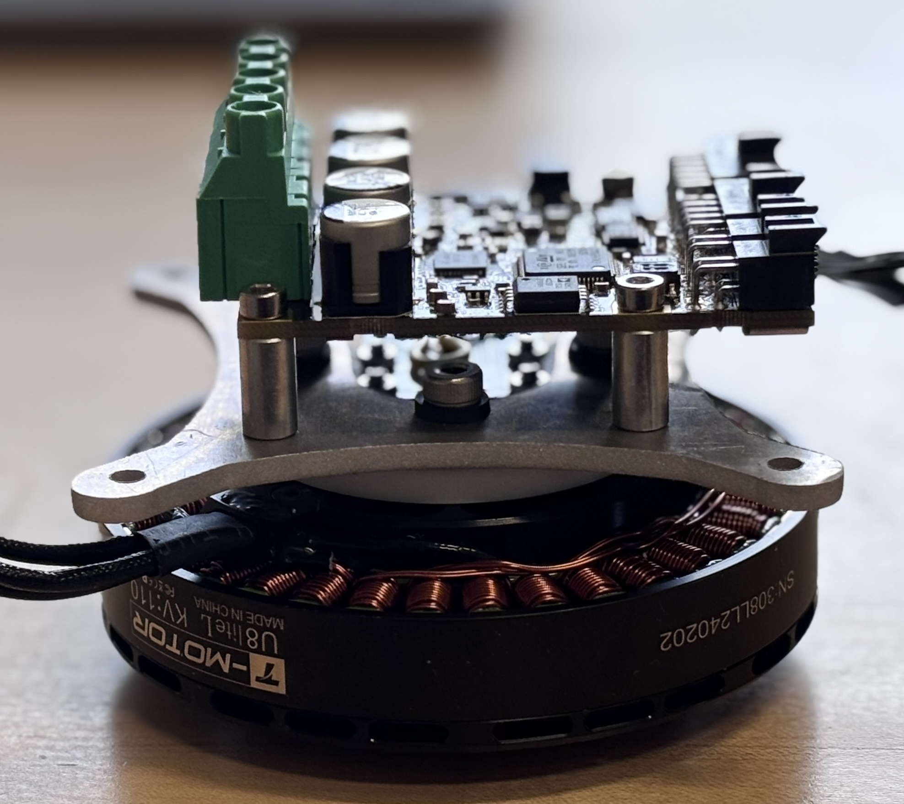
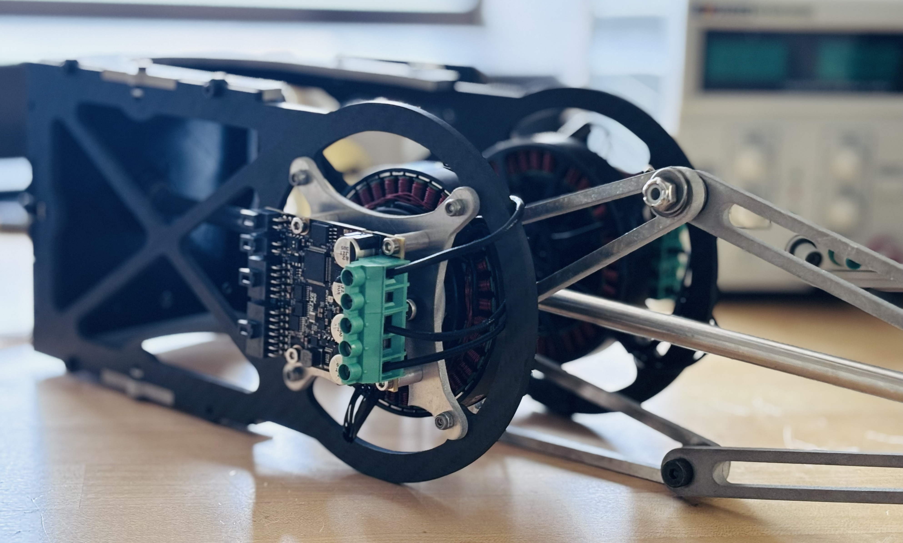
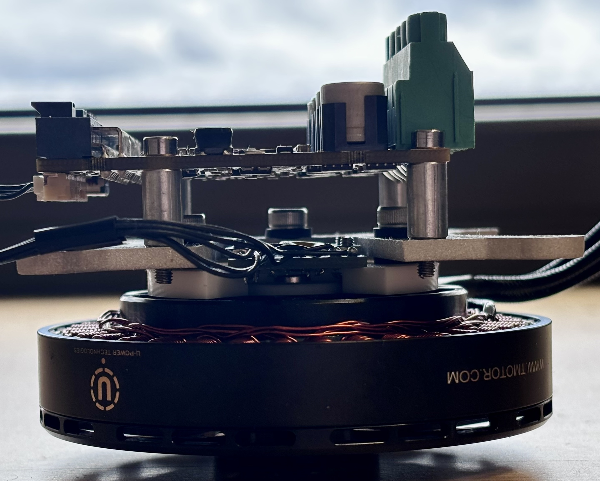
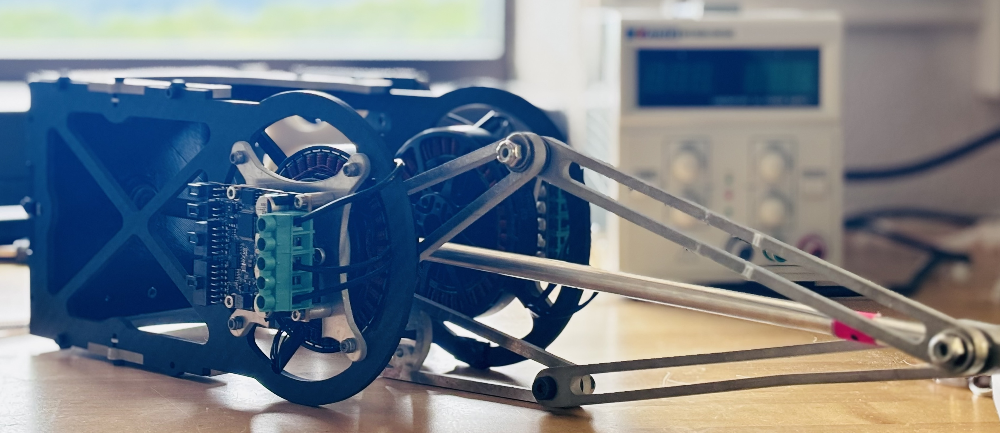
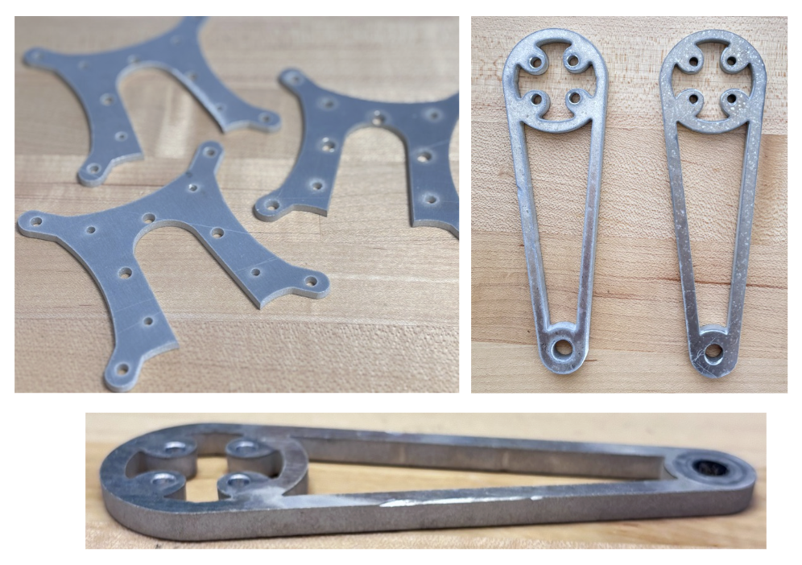
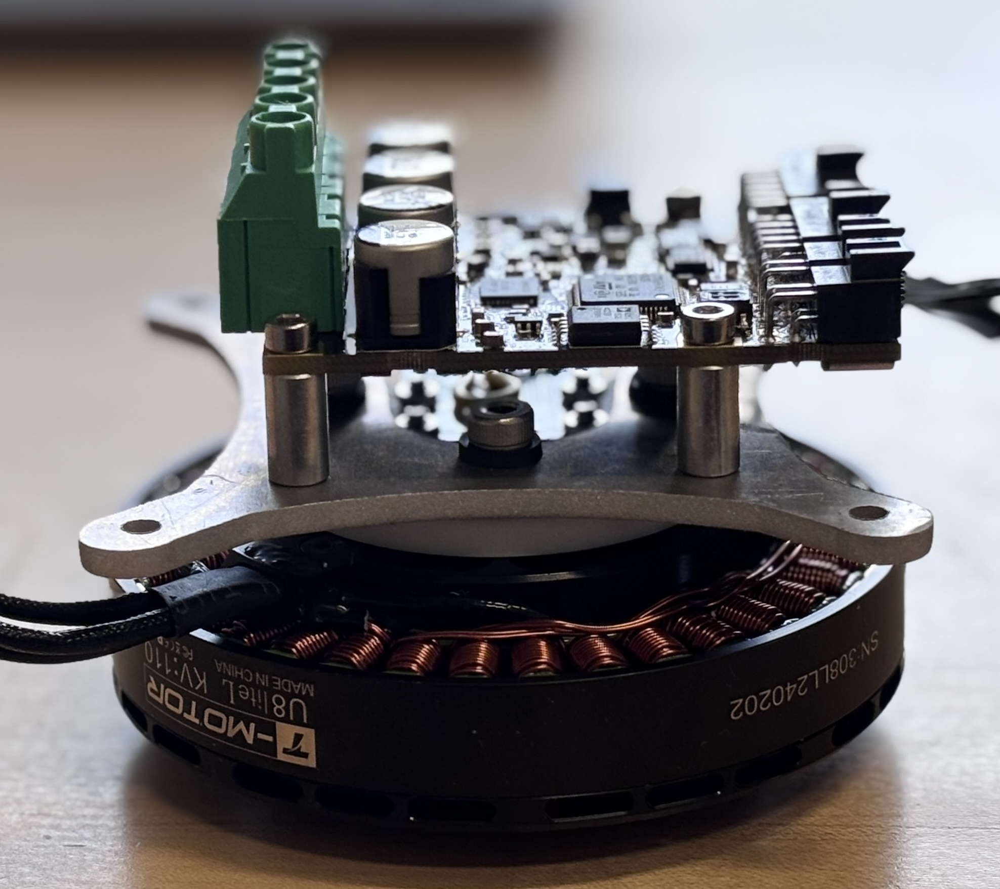
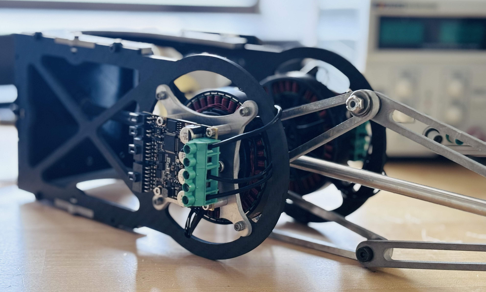
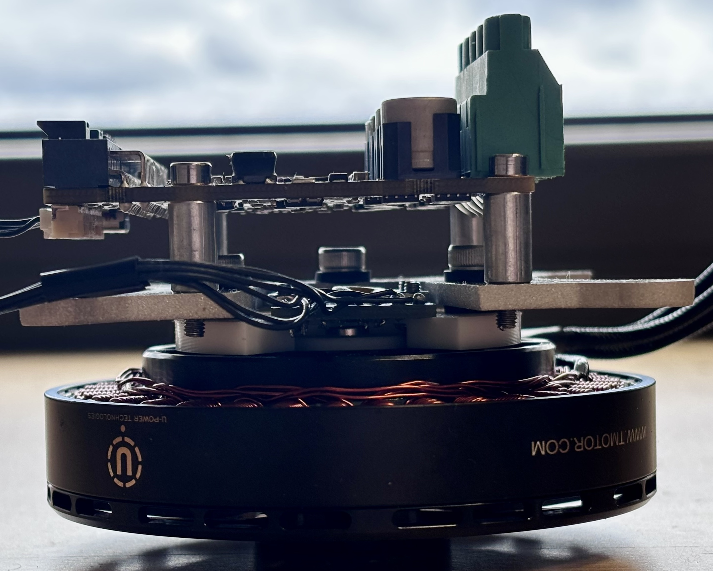
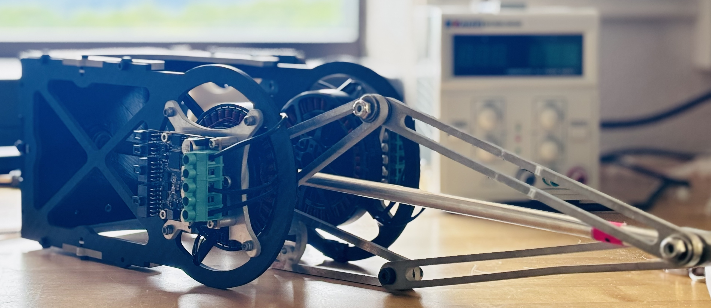
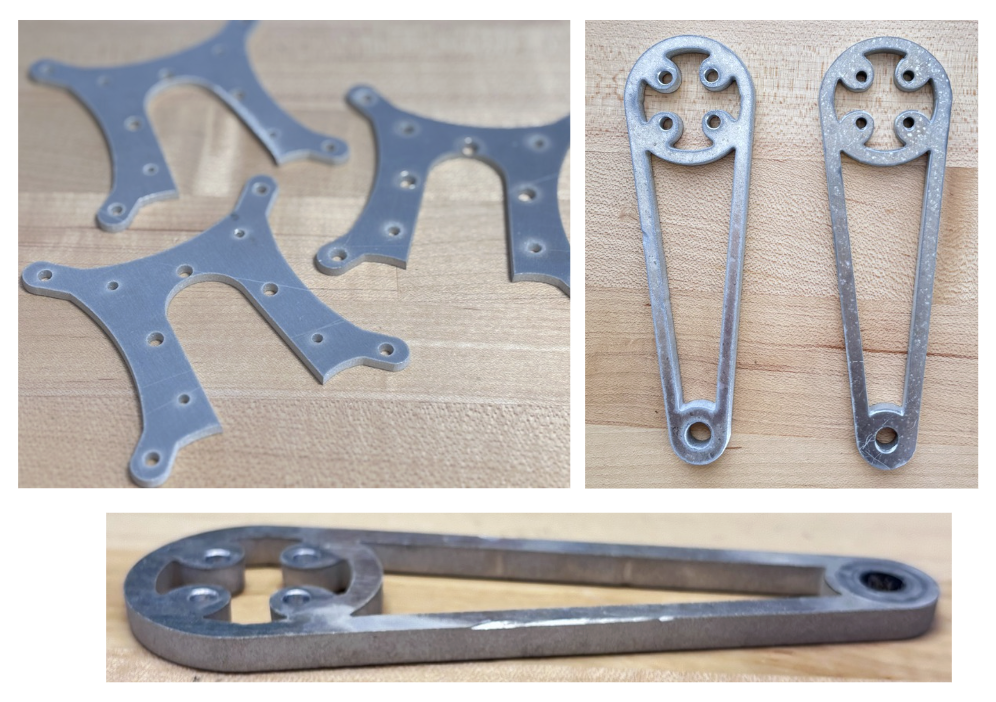

Hardware Selection
T motor U8 Lite L: These BLDC motors can provide high-torque at relatively low speeds, eliminating the need for gearboxes. Their high-thermal load capacity, high torque, output power and light-weight make them efficient for rapid jumps.
Reference paper for selection: Direct-Drive Legged Robots
ODrive Pro motor controller: We used odrive pro as it delivers high peak torque, supports BLDC motors, is easy to configure, and is commercially available.
The main drawback is that it is a single-axis controller, so we need two odrives for each motor, which adds weight to the robot. This is largely offset by
lightweight Carbon fiber body and Aluminum mounts.
AS5047D Encoder (SPI): It offers good resolution, SPI communication, easy to use and cost effective.
Several design iterations were required to
fix the vertical and XY gap between the encoder and the magnet and to securely mount it, to reduce slips during jumps.

 








